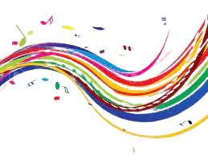
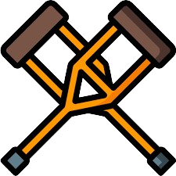

Aquest any has socialitzat amb moltes persones
Ja que tens un cor que ni t’hi cap al pit!
Persones amb les que hi passaries segles:
1
Mireia Vilà Salarich
2
Ignasi Creus Estragués
3
Josep Bernat Jordi Pascual Garcia
4
Ezequiel Paul Eriam
5
Maria Fernanda Zapata
